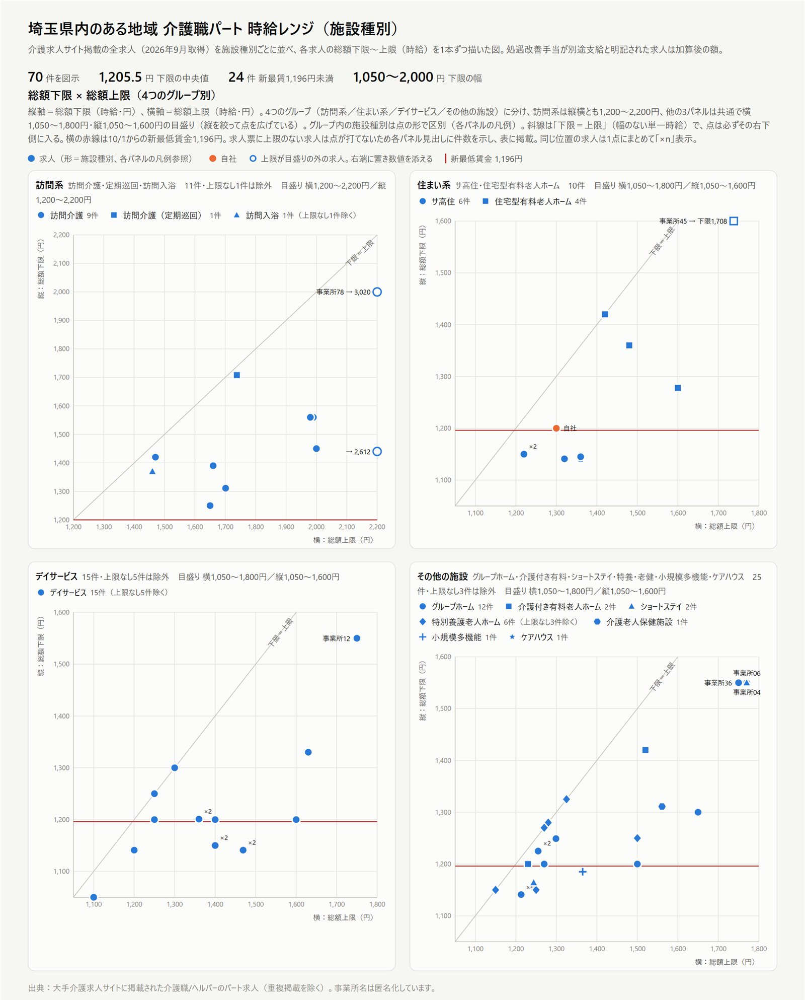
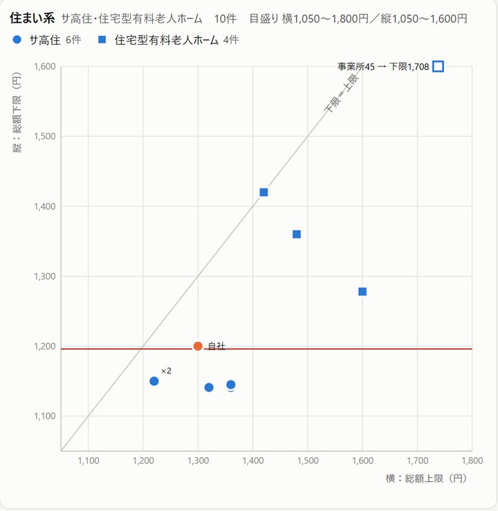

「求人を出しても応募が来ない。介護は人材不足だから仕方がない」――経営者の方から、よく聞く言葉です。
たしかに介護業界の人材不足は深刻です。ただ、同じ地域の中にも、採用できている施設とできていない施設があります。その差はどこから生まれるのでしょうか。
私は経営コンサルタントとして介護事業者の採用をお手伝いしながら、自分自身も埼玉県で介護施設を経営しています。毎年、自社の給与を決める前に、地域の求人を1件ずつ調べて相場を確かめてきました。今回は、その調査から見えた「競合の時給の正しい比べ方」と、時給をどういう考え方で決めるべきかを書きます。
「人材不足だから採用できない」は本当か
数字だけを見れば、介護の人材不足は明らかです。厚生労働省の資料によると、令和6年度の介護関係職種の有効求人倍率は4.08倍。全職業の1.14倍を大きく上回っています。都道府県別に見ると、埼玉県は令和7年3月時点で4.62倍と、全国平均を上回る水準です。
それでも、同じ地域で人を採用できている施設は確かにあります。求職者が少ないのは、どの施設にとっても同じ条件です。だとすれば、差がつくのは「その少ない求職者に選ばれているかどうか」。人材不足は、採用できない理由の説明にはなっても、自社だけが採用できない理由の説明にはなりません。
時給は「引きつける」ものではなく「減点されない」ためのもの
では、選ばれるために時給を上げればよいのか。時給を上げれば、応募は増えます。ただ、私がそれ以上に大事だと考えているのは、「時給で引きつけること」ではなく「時給で減点されないこと」です。
求職者の立場で考えてみてください。応募する前の求職者は、その施設のことをほとんど知りません。手がかりは、求人票に書かれた数少ない情報だけです。その限られた情報の中で職場を選んでいます。
時給の高さで職場を選ぶ人もいます。しかし実際には、時給以外の理由で選ばれることの方が多いものです。一方で、時給が地域の相場より低ければ、それは生活に直結します。相場より低いというだけで、ほかにどんな魅力があっても、求職者の選択肢から外れてしまう。つまり時給は、加点を狙う項目というより、減点されないための「足切りライン」に近いのです。
だから時給は、地域の相場と同等か、少し高いくらいに設定する必要があります。大きく上回る必要はありません。ただし、下回ってはいけない。この「下回っていないか」を確かめるには、競合の時給を正しく知っていなければなりません。
コンサルタントとして支援してきた事業所の中にも、競合より時給が低いことに気づかないまま「人が来ない」と悩んでいたところがありました。本人たちは「うちは相場並み」と思っている。けれど、近隣の求人と並べてみると、見劣りしていたのです。時給以外にどう選ばれるかについては、今後の記事で解説します。
求職者が並べて見ているのは、近所の介護施設の求人
では、「競合」とはどこでしょうか。
介護のパートで働く人の多くは、自宅から通いやすい範囲で職場を探します。求人サイトで地域を絞り込めば、並ぶのは近所の介護施設の求人です。求職者にとっての比較対象は、全国平均でも県の平均でもなく、通勤圏内にある同じような施設の求人。ここが、時給を比べるべき「競合」です。
もちろん、資格を問わない他業種の仕事と比べて職場を選ぶ人もいます。他業種との賃金差については、「最低賃金に処遇改善が追いつかない」で書きました。本記事では、介護施設どうしの比較に絞ります。
ある地域の介護求人を、1件ずつ調べてみた
2026年9月、私が経営する介護施設がある埼玉県内のある地域で、大手の介護求人サイトに掲載されている介護職・ヘルパーのパート求人を、1件ずつ詳細ページまで開いて確認しました。夜勤専従などを除いた日勤系の求人は70件です。
各求人の時給の下限から上限までを、施設種別ごとに並べたのが次の図です。

一目で分かるのは、施設種別によって時給の水準がまったく違うことです。求人の数が多かった施設種別について、時給の下限の中央値を並べると次のとおりです。
| 施設種別 | 件数 | 時給の下限（中央値） |
|---|---|---|
| 訪問介護 | 9件 | 1,440円 |
| グループホーム | 12件 | 1,212.5円 |
| デイサービス | 20件 | 1,200円 |
| 特別養護老人ホーム | 9件 | 1,150円 |
| サービス付き高齢者向け住宅 | 6件 | 1,147.5円 |
同じ「介護のパート」でも、訪問介護とサービス付き高齢者向け住宅では、中央値で約290円の差があります。「介護パートの相場は◯円くらい」とひとくくりにして自社の時給を決めると、訪問介護なら低すぎ、施設系なら高すぎる、ということが起こり得ます。まず比べるべきは、自社と同じ施設種別の求人です。
一覧画面の金額で比べると見誤る3つの理由
「競合の時給なら、求人サイトで見ている」という方もいるでしょう。ただ、求人サイトの検索結果の一覧画面を眺めるだけでは、相場を見誤ります。理由は3つあります。
- 一覧に出ているのは、多くが「下限」だけ――「時給1,141円〜」と書かれていても、資格や経験によって1,400円を超える求人もあります。上限や資格ごとの金額は、詳細ページを開かないと分かりません。
- 処遇改善手当の扱いが、求人ごとにバラバラ――今回調べた92件（夜勤専従なども含む）のうち、基本給と処遇改善手当の内訳が分かる求人は22件（24%）だけでした。43件（47%）は処遇改善について何も書かれておらず、掲載時給に含まれているのかどうか判断できません。
- 施設種別・勤務区分で相場が違う――前の章で見たとおり、施設種別で相場は大きく異なります。さらに、日勤のみか、早番・遅番があるか、夜勤専従かでも金額は変わります。条件の違う求人を混ぜて比べても、意味のある比較になりません。
つまり、正しく比べるには、詳細ページを1件ずつ開き、金額を分解し、条件をそろえて並べ直す必要があります。
処遇改善込みで比べ直すと、順位が入れ替わる
2つ目の理由は、とくに影響が大きいので、例を挙げておきます。
今回の調査で、あるデイサービスの求人は、一覧画面では「時給1,350円〜」と表示されていました。デイサービスの中央値が1,200円ですから、それだけでも高めです。ところが詳細ページを読むと、処遇改善手当として時給とは別に1時間あたり200円が支給される（勤続4か月目から）と書かれていました。これを含めた時給は、下限で1,550円。デイサービス20件の中で、最も高い水準です。
逆のケースもあります。掲載時給が同じ1,200円でも、一方は処遇改善手当込みの金額、もう一方は処遇改善手当が別に上乗せされる金額かもしれません。この2つを同じ1,200円として比べると、自社の位置を見誤ります。
競合と比べるときは、処遇改善手当を含めた総額にそろえて比べることが欠かせません。これは自社の求人の見せ方にも言えることで、処遇改善手当を別に支給しているのに基本給だけを載せていると、求職者には実際より低い時給に見えてしまいます。まさに「時給で減点される」状態です。
散布図で見る、競合の給与設計
もう一つ、競合を見るときに役立つのが、時給の下限と上限の組み合わせです。縦軸に下限、横軸に上限をとって求人を並べると、次のようになります。

右下にある求人は、「入口の時給は低いが、上限は高い」設計です。たとえばデイサービスには、下限は最低賃金ちょうどで、上限は1,400円台という求人が複数ありました。資格や経験のある人には高く払うが、未経験者は最低賃金から、という考え方です。
一方、斜線の近くにある求人は、下限と上限の差が小さい「一律型」です。どちらが良い悪いではありません。自社が採りたいのが未経験者なのか、有資格の経験者なのかによって、比べるべき競合の数字（下限か、上限か）が変わる、ということです。
私が自社の採用時の時給をどう決めたか
参考までに、私自身が自社の施設で10月からの採用時の時給を決めたときの考え方を書いておきます。
まず、改定前の自社の求人を調査結果の中に置いてみると、日勤系70件の中で下から3分の1ほどの位置でした。同じサービス付き高齢者向け住宅の中では高い方でしたが、求職者は施設種別を問わず近所の求人を見ています。これでは、ほかの施設と並べられたときに減点されかねません。
そこで、同じ施設種別の中では上位、日勤系全体でも上から4分の1ほどに入る水準に設定しました。あわせて、日勤のみの人と、早番・遅番にも入れる人とで時給を分け、求人も2本立てにしています。勤務区分ごとに競合の相場が違う以上、1本の求人で幅を持たせるより、それぞれの条件で相場と比べられる方が、求職者にも分かりやすいと考えたからです。金額は、どちらも処遇改善手当を含めた総額で表示しています。
自社で時給相場を調べる手順
ここまでの内容を、自社で相場を調べる手順としてまとめます。
- 商圏を決める：職員が無理なく通ってくる範囲（多くは市区町村2〜3つ分）を対象にする
- 求人を集める：求人サイトで職種・雇用形態・地域を絞り込み、ハローワークの求人も確認する
- 詳細ページを1件ずつ読む：時給の下限と上限、処遇改善手当の扱い（込み／別途／記載なし）、資格による差を記録する
- 条件をそろえる：施設種別と勤務区分（日勤のみ／早番遅番あり／夜勤専従）で分け、処遇改善手当を含めた総額にそろえる
- 自社を置いてみる：自社と同じ条件の求人の中で、自社の時給が相場と同等か少し上にあるかを確かめる
- 定期的に見直す：少なくとも年1回、特に最低賃金が改定される秋には調べ直す
手間がかかるのは3番目です。今回の調査でも、1件ずつ詳細ページを開いて内訳を読み解く作業に、最も時間がかかりました。ここを省くと、先ほどの例のように競合の本当の時給を見誤ります。
なお、調べた金額を自社の求人票にきちんと反映し続けることも同じくらい大切です。求人票の管理については、「最低賃金は上がるのに、求人票は『去年の給料』のまま？」で詳しく書いています。
手が回らない場合は
「必要なのは分かるが、そこまで手が回らない」という方のために、同じ調査を貴事業所の商圏で行うサービスを用意しています。
ご指定の地域・職種の求人を1件ずつ確認して、処遇改善手当まで分解し、本記事の図のような形で相場と貴事業所の位置づけをお示しします。そのうえで、採用時の時給・月給の設定案と、求人票の見直しポイントをレポートにまとめ、オンラインでご報告します。料金は、調査費用が1件500円、レポート作成とご報告会が20万円（いずれも税別）。たとえば求人が100件の地域なら、25万円（税別）です。

うちの時給は、競合と比べてどうなのか
商圏内の介護求人を1件ずつ詳細まで確認し、処遇改善手当まで分解して相場を分析します。自社の位置づけ、採用時の時給・月給の設定案、求人票の見直しまでレポートでご提案します。全国対応・オンラインで完結します。
介護職の給与相場調査を見る →まとめ
人材不足は、どの施設にとっても同じ条件です。そのなかで採用できるかどうかを分けるのは、少ない求職者に選ばれるかどうか。そして時給は、選ばれるための武器というより、選択肢から外されないための条件です。
- 時給は「引きつける」ためではなく「減点されない」ために決める
- 比べる相手は、通勤圏内にある同じ施設種別の求人
- 一覧画面の金額ではなく、詳細ページを読み、処遇改善込みの総額にそろえて比べる
- 地域の相場と同等か、少し上に設定する
- 少なくとも年1回、最低賃金が改定される秋には調べ直す
「うちは相場並みのはず」と思っている時給が、実際に競合と並べてみると見劣りしている。採用できない施設では、珍しくないことです。まずは一度、近所の求人と本気で比べてみてください。
参考
・介護人材確保の現状について（第1回社会保障審議会福祉部会 福祉人材確保専門委員会 資料5、令和7年5月9日）｜厚生労働省
※本記事は一般的な情報提供を目的としたものです。地域の求人調査は2026年9月に、ある介護求人サイトの掲載内容を筆者が個別に確認したもので、他の媒体や地域の状況を代表するものではありません。